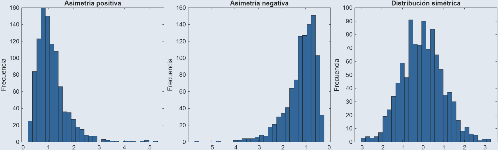
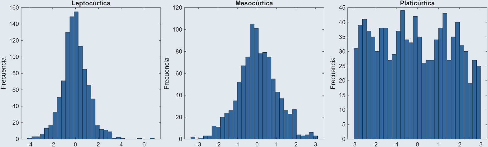

Definiciones. Manejo de Datos y Medidas Estadísticas
1. Introducción y conceptos fundamentales
2. Recolección, organización y representación gráfica de datos
3. Medidas de tendencia central y posición
4. Medidas de dispersión y de forma
Foto por Romulo Queiroz en Pexels
Antes de calcular medidas de tendencia central y de posición, los datos deben organizarse según su naturaleza y volumen.
\[\text{ancho} = \omega = \frac{x_{max} - x_{min}}{k}\]
Estructura mínima que permite organizar datos agrupados en clases, con sus respectivas medidas de posición y conteo.
Medidas que indican cuántas veces aparece un valor o clase y qué proporción representa respecto al total de datos.
| Clase | \(f_i\) | \(h_i\) | \(F_i\) | \(H_i\) |
|---|---|---|---|---|
| … | … | … | … | … |
Al registrar el consumo eléctrico mensual (en kWh) de 50 viviendas de un mismo sector residencial, con un mínimo de 183.6 kWh y un máximo de 419.4 kWh, se pide construir una tabla de frecuencias agrupando estos datos en clases.
Observación que se aleja notablemente del resto de los datos, ya sea por un valor extremo o por una causa identificable (error, condición distinta, caso excepcional).
Medida de tendencia central que resulta de sumar todos los valores de un conjunto de datos y dividir entre el número total de observaciones.
\[\bar{x} = \frac{\sum_{i=1}^{n} x_i}{n}\]
\[\bar{x} = \frac{\sum_{i=1}^{n} x_i}{n}\]
\[\bar{x} = \frac{\sum_{i=1}^{k} f_i \cdot m_i}{n}\]
\(m_i\), marca de clase
\(f_i\), frecuencia de la clase
\(k\), número de clases
\(n\), tamaño de la muestra
La media muestral es una aproximación, no el valor exacto
Con los 50 datos de consumo eléctrico mensual (kWh) ya presentados, calcule la media aritmética como dato no agrupado y compárela con la media obtenida al agrupar los datos en la tabla de frecuencias ya construida.
Media aritmética muestral donde cada valor se multiplica por un peso que refleja su importancia relativa dentro del conjunto.
\[\bar{x}_w = \frac{\sum_{i=1}^{n} w_i \cdot x_i}{\sum_{i=1}^{n} w_i}\]
\[\bar{x}_w = \frac{\sum_{i=1}^{n} w_i \cdot x_i}{\sum_{i=1}^{n} w_i}\]
Una empresa tiene 4 plantas con distinta tasa de defectos por lote y distinto volumen de producción mensual. Se pide calcular la tasa de defectos promedio de la empresa, ponderada por volumen.
| Planta | Tasa de defectos (%) | Volumen (unidades) |
|---|---|---|
| A | 1.2 | 8,000 |
| B | 2.5 | 3,000 |
| C | 0.8 | 12,000 |
| D | 3.1 | 2,000 |
Valor que divide un conjunto de datos ordenados en dos partes iguales: la mitad de las observaciones queda por debajo y la mitad por encima.
\[Me = \begin{cases} x_{\left(\frac{n+1}{2}\right)} & n \text{ impar} \\[6pt] \dfrac{x_{\left(\frac{n}{2}\right)} + x_{\left(\frac{n}{2}+1\right)}}{2} & n \text{ par} \end{cases}\]
\[Me = L_i + \left( \frac{\frac{n}{2} - F_{i-1}}{f_i} \right) \cdot \omega\]
\(L_i\), límite inferior de la clase mediana
\(F_{i-1}\), frecuencia acumulada de la clase anterior
\(f_i\), frecuencia de la clase mediana
\(\omega\), ancho de clase
\(n\), tamaño de la muestra
Valor o clase que se presenta con mayor frecuencia dentro de un conjunto de datos.
\[Mo = L_i + \left( \frac{f_i - f_{i-1}}{2f_i - f_{i-1} - f_{i+1}} \right) \cdot \omega\]
\(L_i\), límite inferior de la clase modal
\(f_{i-1}\), frecuencia de la clase anterior
\(f_i\), frecuencia de la clase modal
\(f_{i+1}\), frecuencia de la clase siguiente
\(\omega\), ancho de clase
\[Mo = 3 Me - 2 \bar{x}\]
Retomando la tabla de frecuencias del consumo eléctrico, calcule la moda usando el método de distancias y la fórmula de Pearson. Compare los resultados.
¿Coinciden? ¿Qué método le parece más confiable para este conjunto de datos, por qué?
Foto por Adinath Gilande en Pexels
Ninguna medida de tendencia central es universalmente mejor; la elección depende de la forma de los datos y la presencia de valores atípicos.
| Situación | Medida recomendada |
|---|---|
| Distribución simétrica, sin atípicos | Media |
| Presencia de valores atípicos | Mediana |
| Datos cualitativos | Moda |
| Distribución muy asimétrica | Mediana |
Un sensor registra automáticamente el peso (en gramos) de 12 empaques de un producto durante una hora de producción, como parte de un control de calidad continuo.
Calcule la media con los 12 datos y compárela con la media excluyendo el noveno registro. ¿Qué pudo haber causado ese valor? ¿Debería excluirse sin más?
Media aritmética calculada tras eliminar un porcentaje igual de valores en cada extremo de los datos ordenados, para reducir la influencia de valores atípicos.
Con los 12 datos de peso de empaques ya presentados, calcule la media recortada al 10%. Recuerde: \(n \cdot p / 100 = 12 \cdot 10 / 100 = 1.2\), que se redondea a 1 dato por extremo.
Compare este resultado con la media sin recortar (14.83 g) y con la media excluyendo manualmente el valor atípico (12.04 g).
Valores que dividen un conjunto de datos ordenados en partes proporcionales, permitiendo ubicar una observación en relación con el resto.
\[\text{Posición} = \frac{k \cdot n}{m}\]
\(k\), número del cuartil/decil/percentil buscado
\(m\), total de divisiones (4, 10 o 100)
Datos ordenados de menor a mayor antes de aplicar la fórmula
\[P_k = L_i + \left( \frac{\frac{k \cdot n}{m} - F_{i-1}}{f_i} \right) \cdot \omega\]
\(L_i\), límite inferior de la clase donde cae la posición
\(k\), número del cuartil/decil/percentil buscado
\(m\), total de divisiones (4, 10 o 100)
\(F_{i-1}\), frecuencia acumulada de la clase anterior
\(f_i\), frecuencia de la clase
\(\omega\), ancho de clase
Misma estructura que la mediana, cambiando la posición buscada
Representación gráfica que resume la posición, dispersión y simetría de un conjunto de datos a partir de sus cuartiles.
\[RIC = Q_3 - Q_1\]
Cualquier dato fuera de ese rango se marca como atípico
Se registró el tiempo de reparación (en horas) de 43 órdenes de mantenimiento correctivo en una planta durante un mes. Se pide calcular cuartiles, RIC y construir el diagrama de caja y bigotes correspondiente.
Foto por Rafael Minguet Delgado en Pexels
Cuantifican qué tan dispersos o concentrados están los datos respecto a una medida de tendencia central.
\[R = x_{max} - x_{min}\]
Medida que cuantifica el promedio de las desviaciones al cuadrado respecto a la media, expresando la dispersión en unidades al cuadrado.
\[\sigma^2 = \frac{\sum_{i=1}^{N} (x_i - \mu)^2}{N}\]
\(\mu\), media poblacional
\(N\), tamaño de la población
Se usa cuando se tienen todos los datos de la población
\[s^2 = \frac{\sum_{i=1}^{n} (x_i - \bar{x})^2}{n - 1}\]
\(\bar{x}\), media muestral
\(n-1\), corrección de Bessel
\[\sigma = \sqrt{\sigma^2} \qquad s = \sqrt{s^2}\]
\[CV = \frac{\sigma}{\mu} \cdot 100\% \qquad CV = \frac{s}{\bar{x}} \cdot 100\%\]
Con los 43 datos de tiempo de reparación ya presentados, calcule el rango, la varianza muestral y la desviación estándar muestral. Note el efecto de los dos valores atípicos (15.2 y 16.8) sobre estos resultados.
Se comparan dos variables de una planta: el tiempo de reparación (horas) y el costo de repuestos por orden (pesos). ¿Cuál de las dos tiene mayor dispersión relativa?
| Variable | Media | Desviación estándar |
|---|---|---|
| Tiempo de reparación | 5.0 h | 3.0 h |
| Costo de repuestos | $2250000 | $360000 |
¿Tiene sentido comparar directamente 3.0 con 360000?
Mide el grado en que una distribución se aleja de la simetría, indicando si los datos se concentran más hacia un lado de la media.
\[g_1 = \frac{\frac{1}{n}\sum_{i=1}^{n}(x_i - \bar{x})^3}{s^3}\]
\(g_1 = 0\), distribución simétrica
\(g_1 > 0\), asimetría positiva (cola hacia la derecha)
\(g_1 < 0\), asimetría negativa (cola hacia la izquierda)

Mide qué tan concentrados o dispersos están los datos alrededor de la media, en comparación con una distribución normal, reflejando el peso de las colas.
\[g_2 = \frac{\frac{1}{n}\sum_{i=1}^{n}(x_i - \bar{x})^4}{s^4} - 3\]
\(g_2 = 0\), mesocúrtica (similar a la normal)
\(g_2 > 0\), leptocúrtica (colas pesadas, más apuntada)
\(g_2 < 0\), platicúrtica (colas ligeras, más achatada)

Asimetría positiva: Media \(>\) Mediana \(>\) Moda
Asimetría negativa: Media \(<\) Mediana \(<\) Moda
Simétrica: Media \(\approx\) Mediana \(\approx\) Moda
| Situación | Medida recomendada |
|---|---|
| Distribución simétrica, sin atípicos | Media |
| Presencia de valores atípicos | Mediana |
| Datos cualitativos | Moda |
| Distribución muy asimétrica | Mediana |
Con los 43 datos de tiempo de reparación ya presentados, calcule el coeficiente de asimetría y el de curtosis. Relacione el resultado con los valores atípicos ya identificados en el boxplot.
Indica cuántas desviaciones estándar se aleja un valor de la media, permitiendo comparar datos de distintas distribuciones en una misma escala.
\[z = \frac{x - \mu}{\sigma} \qquad z = \frac{x - \bar{x}}{s}\]
\(z = 0\), el valor coincide con la media
\(z > 0\), por encima de la media; \(z < 0\), por debajo
\(|z| > 2\), criterio estricto para detectar atípicos
\(|z| > 3\), criterio común, solo desviaciones extremas
Como criterio de atípicos, supone una distribución aproximadamente simétrica. Con datos muy asimétricos, conviene usar el boxplot en su lugar
Calcule el z-score de una orden que tomó 15.2 horas y de otra que tomó 5.5 horas, usando la media y desviación estándar ya calculadas (\(\bar{x} = 4.99\), \(s = 3.08\)).
Ninguna medida por sí sola describe completamente un conjunto de datos: tendencia central, posición y dispersión se complementan.
| Grupo | Qué responde |
|---|---|
| Tendencia central | ¿Dónde se concentran los datos? |
| Posición | ¿Dónde cae un dato respecto al resto? |
| Dispersión | ¿Qué tan esparcidos están los datos? |
| Asimetría y curtosis | ¿Qué forma tiene la distribución? |
Retomando los 43 datos de tiempo de reparación, presente un resumen completo: media, mediana, moda, cuartiles, RIC, desviación estándar, asimetría y curtosis. A partir de ese resumen, redacte una conclusión sobre el comportamiento del proceso de mantenimiento.